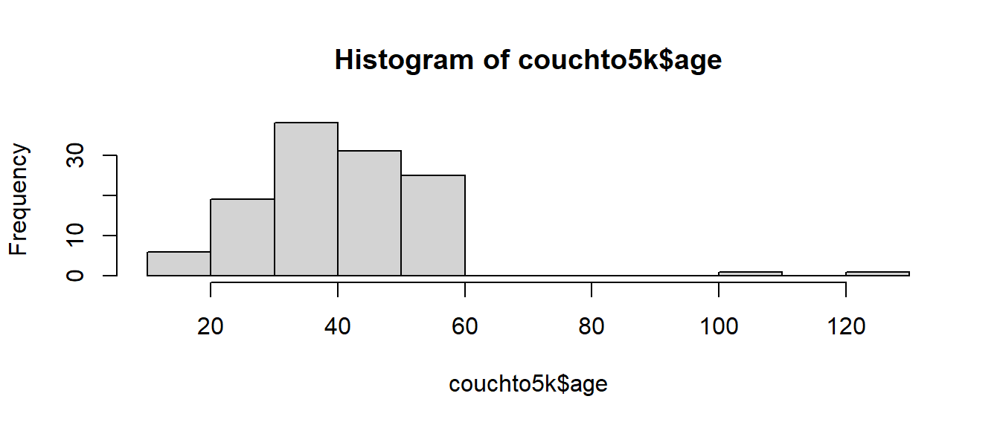
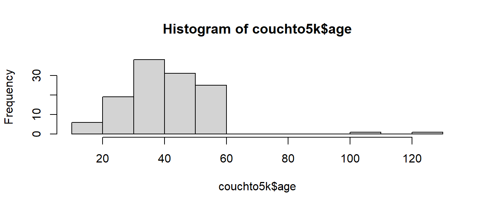
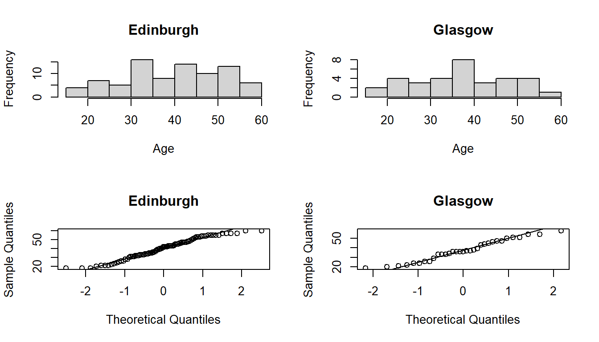

summary(couchto5k$age) Min. 1st Qu. Median Mean 3rd Qu. Max.
18.00 32.00 39.00 40.62 48.00 129.00 hist(couchto5k$age)
Background: Couch to 5k
Couch to 5k is an NHS-sponsored fitness programme which lasts 9 weeks, taking participants from a gentle start up to a half-hour run.
The NHS wants to research some of the potential impact this programme has on wellbeing. They have conducted a small study of 121 people in 2 cities (Edinburgh and Glasgow), all of whom started the Couch to 5k programme, across the course of a year.
The researchers’ interests are two-fold: They are interested in the effects of taking the programme on psychological wellbeing, and also in the psychological factors that make people continue on the programme.
Methods
At Week 0, all participants completed a questionnaire measuring the psychometric factors of accountability and self-motivation.
Upon either completing the programme (Week 9) or dropping out (< Week 9), participants completed a questionnaire which included a measure of their self-reported happiness, and a “health” measure derived from a number of physiological tests. Researchers also recorded the season in which participants started the programme, as evidence from previous research suggests that the probability of completing the couch to 5k programme varies substantially across the year.
Details of the data collected can be found in the table below.
Please note that Couch to 5k is a real programme, but the data you will be analysing comes from our febrile minds.
Data Dictionary:
| Column | Content |
|---|---|
pptID |
random ID code for participant |
age |
age in years |
accountability |
psychometric measure of accountability (or ‘responsibility’) (Sum of 5 questions, each scored 1-7). |
selfmot |
psychometric measure of self-motivation (Sum of 5 questions, each scored 1-7) |
health |
multi-test health measure (0-100) |
happiness |
simple happiness scale (0-100) |
season |
season of the year participants were interviewed in |
city |
city participant was recruited in |
week_stopped |
week of programme participant stopped in (week 9 = completed the programme) |
Have a look at the data. Check for impossible values and deal with these in an appropriate manner. Describe the data, either in words or using suitable graphs (or a combination). Remember to detail the decisions you have made.
Hints:
Going through each variable:
age is an integer variable, shouldn’t have negative values by definition of variable. There are a couple of values \(\geq 100\), which we should probably either exclude, or at the very least mention in our writing. Min. 1st Qu. Median Mean 3rd Qu. Max.
18.00 32.00 39.00 40.62 48.00 129.00 
accountability and selfmot are both integer variables should both be \(5 \leq x \leq 35\) - by definitionWe can see that accountability looks to be okay, but selfmot has a minimum value of -99, which we can’t have.
accountability selfmot
Min. : 6.00 Min. :-99.00
1st Qu.:16.00 1st Qu.: 12.00
Median :20.00 Median : 15.00
Mean :19.92 Mean : 12.82
3rd Qu.:23.00 3rd Qu.: 17.00
Max. :32.00 Max. : 23.00 health and happiness are both integer and should be \(0 \leq x \leq 100\) - by definition of variableboth health and happiness variables are within the possible ranges
health happiness
Min. :35.00 Min. : 0.00
1st Qu.:50.00 1st Qu.: 18.00
Median :57.00 Median : 46.00
Mean :56.99 Mean : 44.28
3rd Qu.:64.00 3rd Qu.: 65.00
Max. :82.00 Max. :100.00 season should be one of “spring”, “summer”, “autumn”, “winter”We have some mis-spellings of “autumn” as “autunm” which we should fix
(i’m adding in the useNA="always" bit just so i can also see if there are any that are already missing)
city should be one of “Edinburgh”, “Glasgow”This looks fine:
week_stopped is an integer variable and should be \(1 \leq x \leq 9\) - by definition of variableWe have an entry of 12, which we can’t have. Could this be interpreted as someone doing the programme for an extra 3 weeks beyond the 9? In which case could we turn that 12 into a 9? It’s just a possible that it’s a typo, and it’s supposed to be a 1. This ambiguity is probably going to be best dealt with by considering that datapoint to be missing.
We’ll do all of our cleaning inside one mutate().
couchto5k <-
couchto5k %>%
mutate(
# ages >100, make NA
age = ifelse(age>100, NA, age),
# selfmot scores <5, make NA
selfmot = ifelse(selfmot < 5, NA, selfmot),
# change autunm to autumn
season = ifelse(season == "autunm","autumn",season),
# and then make it a factor (lets set the levels too)
season = factor(season, levels = c("spring","summer","autumn","winter")),
# make city a factor
city = factor(city),
# weekstopped if >9, then NA
week_stopped = ifelse(week_stopped > 9, NA, week_stopped)
) pptID age accountability selfmot
Length:121 Min. :18.00 Min. : 6.00 Min. : 7.0
Class :character 1st Qu.:32.00 1st Qu.:16.00 1st Qu.:13.0
Mode :character Median :39.00 Median :20.00 Median :15.0
Mean :39.35 Mean :19.92 Mean :14.7
3rd Qu.:47.50 3rd Qu.:23.00 3rd Qu.:17.0
Max. :60.00 Max. :32.00 Max. :23.0
NA's :2 NA's :2
health happiness season city week_stopped
Min. :35.00 Min. : 0.00 spring:67 Edinburgh:87 Min. :1.00
1st Qu.:50.00 1st Qu.: 18.00 summer:36 Glasgow :34 1st Qu.:3.00
Median :57.00 Median : 46.00 autumn:10 Median :8.50
Mean :56.99 Mean : 44.28 winter: 8 Mean :6.25
3rd Qu.:64.00 3rd Qu.: 65.00 3rd Qu.:9.00
Max. :82.00 Max. :100.00 Max. :9.00
NA's :1 Because we know that the resulting missingness is restricted to a relatively small proportion of the dataset, we’ll just stick with the complete cases.
121 participants were recruited to take part in the study. 2 participants recorded ages exceeding 100, 2 participants recorded an impossible score on the self-motivation scale, and a further one participant recorded having stopped the programme 3 weeks after the defined maximum. These 5 participants were excluded from all analyses.
The remaining 116 participants were all over 18 (Mean age 39, SD 11.4) and were recruited from Edinburgh (72%) and Glasgow (28%). The median number of weeks spent in the ‘couch-to-5k’ programme was 8.5, with 50% successfully completing the 9 weeks. Spring and summer were the most common seasons for attempting the programme (56% and 29% of participants respectively), with 8% undertaking it in autumn and only 7% in winter.
The researchers conducting the study want to first find out a little more about differences between the Edinburgh and Glasgow study sites. Specifically, they would like to investigate whether dropping out of the programme early (prior to week 5), late (after week 5) or not at all (completed all 9 weeks), is different between Edinburgh and Glasgow participants. They would also like to know if the average age of participants is different between the cities.
Hints:
There are two questions here, dropout ~ city and age ~ city. These are nice and simple questions about the relationships between only two variables.
The dropout ~ city question is asking us to categorise when participants stop the programme into “early”, “late”, or “not at all”. So the question is categorical ~ categorical. Sounds like a \(\chi^2\) test to me!
let’s check that the above ifelse statement worked as we wanted:
1 2 3 4 5 7 8 9
early 12 10 10 14 0 0 0 0
late 0 0 0 0 3 4 5 0
not at all 0 0 0 0 0 0 0 58and let’s look at the differences between the cities, and also perform a \(\chi^2\) test. We’re going to simulate the p-value here, because some of our expected cell counts are going to be \(<5\) (see e.g. Week 4 Exercises #eye-colours)
Pearson's Chi-squared test with simulated p-value (based on 2000
replicates)
data: table(couchto5k$dropout, couchto5k$city)
X-squared = 1.1772, df = NA, p-value = 0.5722The age ~ city question, on the other hand, is asking whether a continuous variable is different between two groups (Edinburgh and Glasgow). We can do this with a \(t\)-test!
Let’s first assess the extent to which the ages of two groups of participants (Edinburgh folk and Glasgow folk) have similar variances (an assumption of the standard t-test), as well as the extent to which they are normally distributed:
hist(couchto5k$age[couchto5k$city=="Edinburgh"],
main = "Edinburgh", xlab = "Age")
hist(couchto5k$age[couchto5k$city=="Glasgow"],
main = "Glasgow", xlab = "Age")
qqnorm(couchto5k$age[couchto5k$city=="Edinburgh"], main = "Edinburgh")
qqline(couchto5k$age[couchto5k$city=="Edinburgh"])
qqnorm(couchto5k$age[couchto5k$city=="Glasgow"], main = "Glasgow")
qqline(couchto5k$age[couchto5k$city=="Glasgow"])
These look almost okay to me. Not great, but not completely awful. We should bear in mind that we have >30 participants in each group, which means we can be a little more relaxed about requiring very close to normal data.
The test of equal variances suggests we have no reason to reject the hypothesis that the two groups have equal variances:
F test to compare two variances
data: age by city
F = 1.1097, num df = 82, denom df = 32, p-value = 0.7599
alternative hypothesis: true ratio of variances is not equal to 1
95 percent confidence interval:
0.5946755 1.9197878
sample estimates:
ratio of variances
1.109742 So we can carry on with our t-test of the difference in means1:
Two Sample t-test
data: age by city
t = 1.2181, df = 114, p-value = 0.2257
alternative hypothesis: true difference in means between group Edinburgh and group Glasgow is not equal to 0
95 percent confidence interval:
-1.779968 7.463794
sample estimates:
mean in group Edinburgh mean in group Glasgow
40.08434 37.24242
A \(\chi^2\) test of independence indicated that rate of attrition (early-/late-/no- dropout) did not significantly differ between Edinburgh and Glasgow (\(\chi^2\)(N=116) = 1.177, Monte Carlo simulated (B=2000) p = 0.572). From both cities, 50% of participants did not drop out of the programme, late drop-outs made up 12.5% of Glasgow participants and 10% of those from Edinburgh, with the remainder dropping out early (37.5% of Glasgow, 40% of Edinburgh).
The mean age of participants was not significantly different between the two cities (\(t( 114 )=1.22, \, p=0.23\)), with a mean age in Edinburgh of 40.1 and in Glasgow of 37.2.
Researchers would like to examine whether, beyond seasonal and age-related variation, happiness ratings are influenced by how far participants get through the couchto5k programme. They would also like to investigate whether the effects of couchto5k progression are amplified by feeling healthy, such that the happiness of participants who got further along the programme might be more affected by the health metric than that of those who stopped earlier.
Hints:
mod <- lm(y ~ x1 + x2 + x3:x4), use of anova(mod) and coef(mod) can give us different things.
TODO
Analysis of Variance Table
Response: happiness
Df Sum Sq Mean Sq F value Pr(>F)
age 1 1357 1357.3 1.6984 0.19527
season 3 7124 2374.6 2.9713 0.03504 *
week_stopped 1 65 65.1 0.0815 0.77584
health 1 143 142.8 0.1787 0.67330
week_stopped:health 1 24141 24140.9 30.2067 2.616e-07 ***
Residuals 108 86312 799.2
---
Signif. codes: 0 '***' 0.001 '**' 0.01 '*' 0.05 '.' 0.1 ' ' 1week_stopped does not explain variance after accounting for age and season
but, interaction is significant.
Researchers are interested the psychological factors that make people continue on the programme.
If we had reason to believe the variances are not equal, we can look at doing Welch’s t-test↩︎